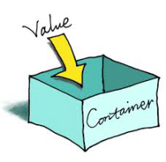

0: Overview
Module Overview
Module Overview
Introducing Glitch
Introducing Glitch
Glitch Tour
Lab-1 Glitch Intro
00: Overview
1: Introducing Javascript
Introducing Javascript
JS Introduction
Variables & Logic
Const, Let & Objects
Lab-2 JS Intro
01: Javascript Introduction
2: Javascript Arrays
Javascript Variables, Objects & Methods
Variables & Objects Review
Methods & Arrays Review
Javascript Arrays
Arrays: Basics
Array Methods
Array Iteration
Arrays of Objects
Lab-3 JS Arrays
02: Javascript Arrays
1: Introducing Javascript
Eamonn de Leastar, WIT Computing
01: Javascript Introduction
Introducing Javascript
JS Introduction
Variables & Logic

Const, Let & Objects
Lab-2 JS Intro